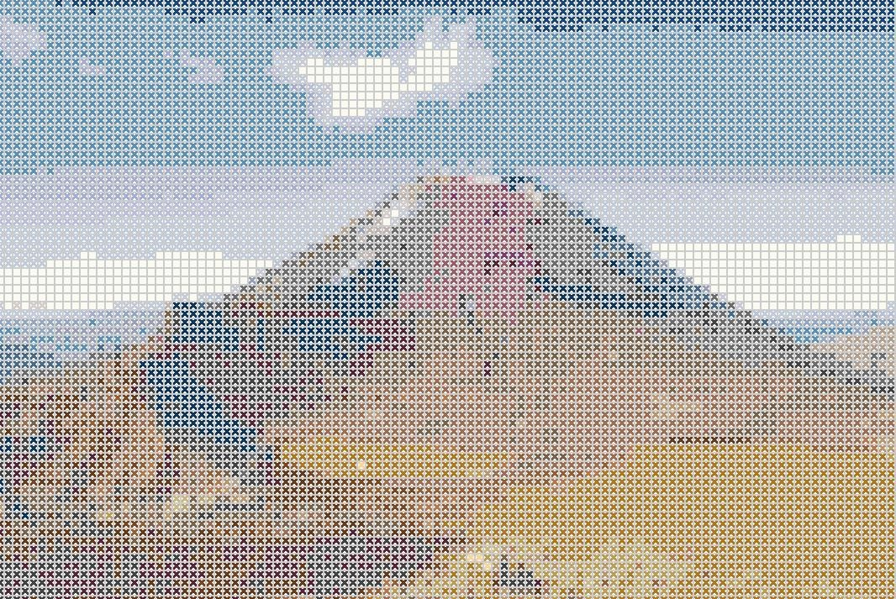
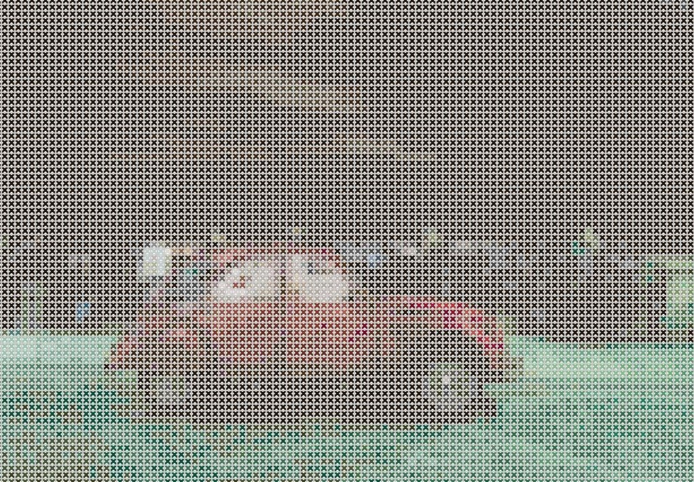
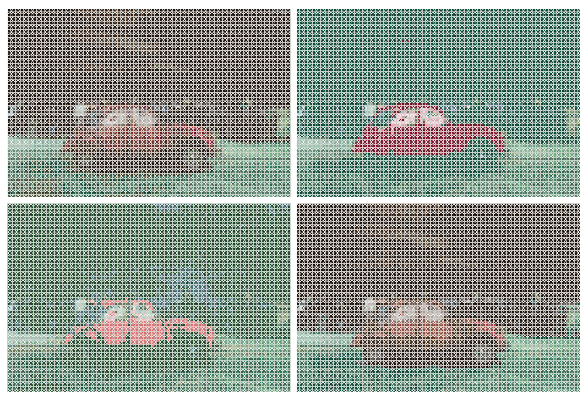
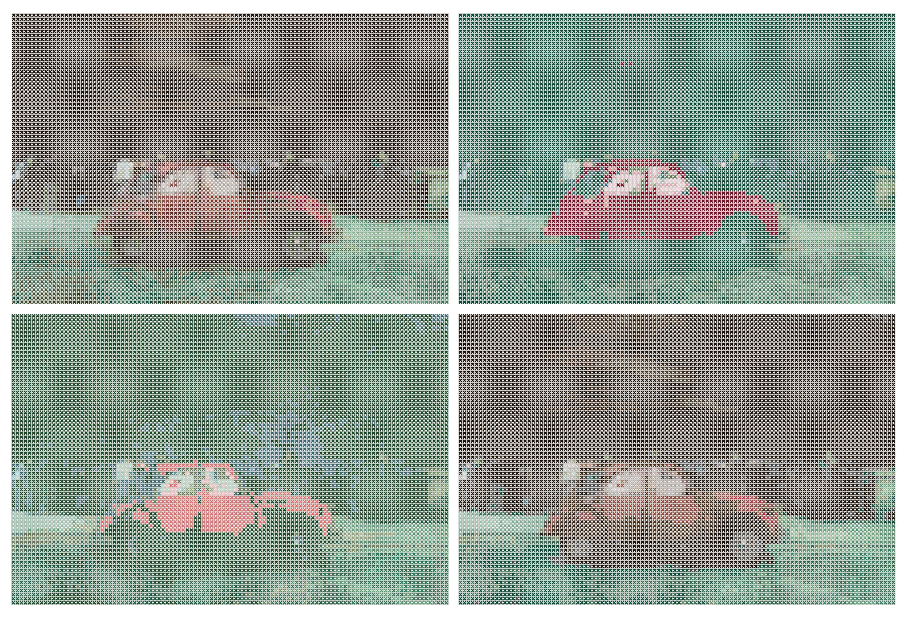

Summary
This project investigate and implements an algorithm based on CIELAB color metric in order to create a cross stitch pattern according to an input image. The algorithm is extended with two different kind of optimizations where one creates a limited subset of all the available colors to best cover the whole color space, and one is based on measures of the most occurring intensity values in the input image for choosing an optimal subset of colors for reproduction.
The purpose of applications for image reproduction is often aimed at creating realistic replicas of the original that are optimized with regards to computational speed versus quality of the reproduced image. This project investigate the usage of image reproduction with regards to both efficiency and quality, but also for an artistic usage as a cross stitch pattern generator and a base for embroidery applications. The algorithm is implemented and extended with two different kinds of optimization techniques and further evaluated in terms of how well they respond to the process of creating a detailed and appealing cross stitch image.
Implementation
The base of colors that is used in this project is the actual DMC colors for embroidery thread that can be purchased in fabric and embroidery stores. Embroidery thread is a special yarn that is manufactured especially for embroidery and needlework. All the colors that DMC produces has a name and color expressed in the DMC color chart. In this project, a csv-file containing 453 different DMC colors is used. The file is consisting of a number of columns such as the DMC color chart number, the name of the color and the corresponding RGB color values.
The implementation of the algorithm was developed with the base in the CIELAB color space. This approach is used since a perceptual uniform color space is needed in order to being able to compare color intensity values with each other. The input image is loaded and converted into double precision. The image is classified and determined to be of either landscape, portrait or square format. The dimensions of the input image are measured and resized with the use of bicubic interpolation. If the input image is smaller than 200 pixels in any dimension, the algorithm stops and tells the user to choose a larger image since the reproduction will suffer from a lot of artefacts when resizing an image of such a small size.
After the resizing of the input image, the algorithm goes through the image in blocks of the same size as the single cross stitch dimensions and calculates the mean color intensity for that area expressed in LAB values. Space is allocated for an output image of the same size as the cropped image and then the algorithm goes through the array of mean intensity values and finds the closest color in the CIELAB color space that exists in the DMC data. The corresponding area in the reproduced image are then covered by a cross stitch in this particular color. The algorithm then outputs the final image as well as the chosen DMC colors with corresponding name and DMC color code for purchasing in a store.
Optimizations
The first optimization used all the DMC colors as a base and then performed a reduction. Colors in the beginning of the array containing the colors expressed in CIELAB are chosen and the algorithm then loops through the rest of the array and calculates the euclidean distance between every color. Colors are then picked based on a threshold that is set such that only colors that are separated with a certain distance from each other are considered. By repeating this, a subset of 100 colors are chosen as a reduced version of all the DMC colors. This optimization was further repeated to reduce the color space to only having 50 colors for the algorithm to choose from. The first approach was to repeat the process of looping through the array of 100 colors and choosing 50 colors that are separated by a threshold, but it was further discovered that a simpler approach of taking every odd item in the array of 100 colors gave a better result.
The second optimization implemented was to use the input image as base for choosing a subset of DMC colors. By looping through the input image and order the most frequently occurring colors according to the mean intensity, a subset of colors could be chosen that best represented the colors in the input image. This subset consisted of a maximum of 50 colors but could be smaller if the algorithm could not distinguish this many colors in the input image.
 

In the images above, the resulting reproductions can be seen for using the full choice of DMC colors, the reduced subset of 100 colors, the reduced subset of 50 colors and the optimization based on input image.
Further work
The algorithm outputs the DMC colors to buy for embroidery yarn and the optimizations are reducing the number of colors needed to around 20-30 threads, depending on the input image. It is hard to create an universal pipeline that can handles every type of image, and an extension of the algorithm would be to implement a type of classification for determining what type of input image it is and if lots of similar colors exists in the image or not, by for example observing the histogram. In this way, the best optimization for that specific purpose could be chosen and thereby deliver an image that best fits the purpose.
Another way to create a more usable application could be to give the user the choice of setting a maximum amount of colors to be used for the reproduction, as well as not reproducing a cross stitch at all for colors that are very close to white color and instead take advantage of the light color in embroidery fabric. It would also be a nice feature to add geometric symbols for different colors in order for the user to distinguish differences when using for embroidery.